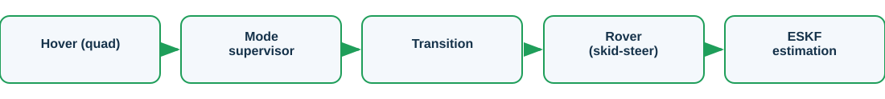
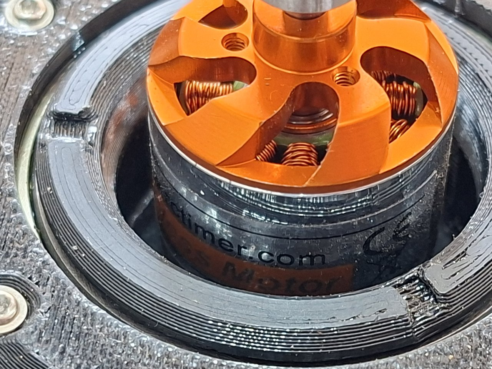
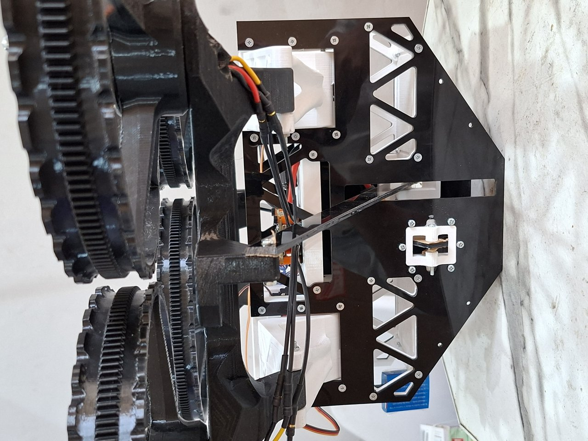

Rover-Hover Morphobot Digital Twin
Final-year project (in progress)
Intentionally high level. Quantitative results, parameter values and the full thesis are withheld until the project is defended.
Overview
A MATLAB/Simulink digital twin of a two-mode rover and hover transforming quadcopter whose motors sit inside its wheels. It covers flight dynamics, cascaded PID flight control, ESKF state estimation, skid-steer control and a mode-transition supervisor, paired with vendor-built hardware.
The challenge
A vehicle that both flies and drives has two dynamics regimes and a transition between them, modelled faithfully and paired with real hardware.
Approach

- Model the quad flight dynamics and a cascaded PID flight controller
- Estimate state with an Error-State Kalman Filter (ESKF)
- Add skid-steer control for the ground mode
- A mode supervisor manages the hover-to-rover transition
Results
| Modes | hover + rover |
| Flight control | cascaded PID |
| Estimation | ESKF |
| Status | in progress |



What it demonstrates
A hardware-paired digital-twin workflow spanning flight dynamics, control, estimation and mode transition for a transforming robot.